Berufsmaturitätsschule Winterthur
Ausrichtung TALS
Hatt Darius, Ruch Jana
Betreuung:
Dr. Jose Osuna
Abgabe:
30. Januar 2026
_______________________________________________________________________
Berufsmaturitätsarbeit 2025/2026
Klasse 6ZVT25c
This thesis examines how seriously quantum computers threaten the security of today’s encryption and to what extent data would be endangered if a market-ready quantum computer were available tomorrow. This thesis introduces the physical principles of quantum computing, including qubits, superposition, entanglement, and quantum gates, and contrasts their computational potential with that of classical computers. The current state of development and realistic timelines for fault-tolerant devices with thousands of logical qubits are outlined. Building on this foundation, modern cryptographic methods are explained, focusing on the role of symmetric and asymmetric schemes and the dependence of RSA on the hardness of integer factorization. Using brute-force attacks and Shor’s algorithm as central examples, it is shown how a sufficiently powerful quantum computer could break widely used public-key systems in polynomial time. The resulting risks for long-term confidentiality under “harvest now, decrypt later”-attacks are assessed for governments, companies, and private individuals. An expert interview in the field of cryptography serves to validate and complement the theoretical findings. Finally, the societal and economic impacts are discussed and the future outlook through post-quantum cryptography is evaluated. The thesis concludes that although the day of market-ready quantum computers has not yet arrived, immediate migration strategies are essential to ensure future-proof data security.
Diese Berufsmaturitätsarbeit untersucht, wie ernsthaft Quantencomputer die Sicherheit der heutigen Verschlüsselung bedrohen und inwieweit Daten gefährdet wären, wenn morgen ein marktreifer Quantencomputer verfügbar wäre. Diese Arbeit stellt die physikalischen Prinzipien des Quantencomputings vor, darunter Qubits, Superposition, Verschränkung und Quantengatter, und vergleicht deren Rechenpotenzial mit dem klassischer Computer. Der aktuelle Entwicklungsstand und realistische Zeitpläne für fehlertolerante Geräte mit tausenden von logischen Qubits werden skizziert. Auf dieser Grundlage werden moderne kryptografische Methoden erläutert, wobei der Schwerpunkt auf der Rolle symmetrischer und asymmetrischer Verfahren und der Abhängigkeit von RSA von der Schwierigkeit der Faktorisierung ganzer Zahlen liegt. Anhand von Brute-Force-Angriffen und Shors Algorithmus als zentrale Beispiele wird gezeigt, wie ein ausreichend leistungsfähiger Quantencomputer weit verbreitete Public-Key-Systeme in polynomieller Zeit entschlüsseln könnte. Die daraus resultierenden Risiken für die langfristige Vertraulichkeit bei „Harvest now, decrypt later”-Angriffen werden für Regierungen, Unternehmen und Privatpersonen bewertet. Zur Validierung und Ergänzung der theoretischen Erkenntnisse dient ein Experteninterview im Bereich Kryptografie. Abschliessend werden die gesellschaftlichen und wirtschaftlichen Auswirkungen diskutiert und die Zukunftsaussicht durch Post-Quanten-Kryptografie bewertet. Die Arbeit kommt zu dem Schluss, dass der Tag der marktreifen Quantencomputer zwar noch nicht gekommen ist, aber sofortige Migrationsstrategien unerlässlich sind, um eine zukunftssichere Datensicherheit zu gewährleisten.
Diese Arbeit entstand im Rahmen der Berufsmaturitätsarbeit an der Berufsmaturitätsschule
Winterthur.
Die Forschung hat im Bereich Quantencomputer in den letzten Jahren enorme Fortschritte gemacht.
Sie gelten daher als Technologie der Zukunft. 2025 wurden Quantenphysiker mit dem Nobelpreis im
Bereich Physik ausgezeichnet. Die verfassenden Personen dieser Arbeit haben einen technischen Beruf
erlernt und bringen bereits Vorwissen in Elektrotechnik mit. Mit dieser Arbeit können
persönliche Interessen optimal mit einem aktuellen technologischen Thema verbunden werden.
Wir bedanken uns bei unserer Betreuungsperson Dr. José Osuna für die grosse Unterstützung. Ein
Dank gilt auch Dipl.-Ing. Christian Weber (WEEI) MBA, IT-Sicherheitsexperten und Dozent an der
ZHAW, für das Interview und die wertvollen Inputs.
Die rasante Entwicklung der Quantencomputertechnologie stellt die Informationssicherheit vor
grundlegende Herausforderungen. Während klassische Computer an physikalische Grenzen stossen,
versprechen Quantencomputer durch die Nutzung quantenmechanischer Phänomene wie Superposition
und Verschränkung für bestimmte mathematische Probleme eine signifikant gesteigerte
Rechenleistung. Diese technologische Revolution birgt jedoch ein erhebliches Risiko für die
Sicherheit heutiger Verschlüsselungsverfahren, die auf mathematischen Problemen basieren.
Besonders betroffen sind asymmetrische Verschlüsselungsverfahren wie RSA, sie könnten
durch ausreichend leistungsfähige Quantencomputer vollständig entschlüsselt werden [1].
Die vorliegende Berufsmaturitätsarbeit untersucht die konkrete Bedrohungslage, die von
Quantencomputern für aktuelle Verschlüsselungsstandards ausgeht. Im Zentrum steht die Fragestellung:
Welche Bedrohung stellen Quantencomputer für die Sicherheit aktueller Verschlüsselungsverfahren dar,
und inwiefern wären dadurch Daten gefährdet, wenn morgen ein Quantencomputer marktreif wäre?
Zur Beantwortung dieser Frage werden zunächst die physikalischen Grundlagen der
Quantencomputertechnologie erläutert, um die Funktionsweise von Qubits und deren Überlegenheit
gegenüber klassischen Bits zu verstehen. Anschliessend erfolgt eine detaillierte Analyse moderner
Verschlüsselungsverfahren, wobei der Fokus auf der RSA-Verschlüsselung und deren Verwundbarkeit
gegenüber quantenbasierten Angriffsalgorithmen wie dem Shor-Algorithmus liegt. Als messbare
Kriterien dienen die erforderliche Anzahl logischer Quantenbits (Qubits) zur Entschlüsselung gängiger
Schlüssellängen sowie die Zeitspanne bis zur voraussichtlichen Marktreife derartiger Systeme.
Methodisch stützt sich diese Arbeit auf Fachliteratur und Experteninterviews. Ergänzend wurde ein
qualitatives Interview mit Dipl.-Ing. Christian Weber MBA, einem IT-Sicherheitsexperten an der
ZHAW, geführt. Diese Primärquelle ermöglicht eine praxisnahe Einschätzung der aktuellen Risiken.
Die wissenschaftliche Literatur zeigt, dass das Thema in der Fachwelt intensiv diskutiert wird,
insbesondere die Bedrohung für bestehende Verschlüsselungsverfahren. Die Aktualität der Bedrohung
wird durch die konkreten Roadmaps führender Unternehmen wie IBM unterstrichen, die die
Entwicklung von Quantencomputern mit über 2000 logischen Qubits für die 2030er Jahre
prognostizieren [1].
Nachfolgend werden die physikalischen Grundlagen der Quantencomputertechnologie erläutert, wie
Superposition, Verschränkung und Quantengatter. Zusätzlich werden die Unterschiede zu
klassischen Computern aufgezeigt und der aktuelle Stand der Entwicklung beschrieben.
Klassische Computer speichern und verarbeiten Informationen mit Bits. Diese werden mithilfe von
Transistoren realisiert und können entweder den Wert 0 oder 1 annehmen. Gemäss dem Gesetz von
Moore verdoppelt sich die Anzahl der Transistoren auf einem Chip alle 18 bis 24 Monate, was zu einer
stetigen Steigerung der Rechenleistung klassischer Computer führt [2]. Die Rechenleistung
wird gesteigert, weil die Transistoren kleiner werden. Diese sind mittlerweile nur noch drei
Nanometer gross [3]. Da Transistoren nicht kleiner als einzelne Atome werden können, ist
eine Miniaturisierung nach klassischem Prinzip irgendwann nicht mehr möglich [2]. Bei
dieser atomaren Grössenordnung dominiert nicht mehr die klassische Physik, sondern die
Quantenmechanik und ihre kontraintuitiven Phänomene werden zu dominanten Effekten [4].
Quantencomputer stellen einen grundlegend neuen Ansatz dar, indem sie die Prinzipien der
Quantenmechanik nutzen. Sie arbeiten mit sogenannten Qubits (Quantenbits). Diese basieren auf der
mikroskopischen Skala, wo quantenmechanische Phänomene herrschen, und nicht auf der
makroskopischen Skala der klassischen Physik. Der entscheidende Unterschied liegt in der Natur der
Qubits. Während klassische Bits zu jedem Zeitpunkt entweder den Zustand 0 oder 1 haben, können
sich Qubits dank der Superposition (siehe Kapitel 2.1) gleichzeitig in einer Überlagerung mehrerer
Zustände befinden. Dies ermöglicht es Quantencomputern, Informationen auf völlig neue Art
zu verarbeiten, und eröffnet das Potenzial, bestimmte Probleme exponentiell schneller zu
lösen als klassische Computer. Diese exponentielle Zunahme der Rechengeschwindigkeit hat
weitreichende Konsequenzen, insbesondere für die Kryptographie, da zahlreiche heute verwendete
Verschlüsselungsverfahren durch die Rechenkapazität von Quantencomputern potenziell gefährdet sind
[4].
In der Quantenphysik gibt es zwei grundlegende Prinzipien, die sie von der klassischen Physik unterscheiden und die das Verhalten von Qubits bestimmen: Superposition und Verschränkung.
Ein Qubit kann sich in einer Überlagerung mehrerer Zustände befinden, der sogenannten
Superposition. Das Qubit befindet sich dabei im Zustand Ket-Psi, dargestellt als \(|\psi \rangle \). Dieser Zustand wird
ausgedrückt durch: \begin {equation*} |\psi \rangle = \alpha |0\rangle + \beta |1\rangle \end {equation*} Dabei gilt: \(|\alpha |^2 + |\beta |^2 = 1\), damit die Gesamtwahrscheinlichkeit der beiden Zustände 100 %
beträgt, wobei \(\alpha , \beta \in \mathbb {C}\). Da \(\alpha \) und \(\beta \) komplexe Zahlen sind, können sie auch als Summe von Real- und
Imaginärteil dargestellt werden: \begin {equation*} |\psi \rangle = (Re(\alpha )+Im(\alpha )i) |0\rangle + (Re(\beta )+Im(\beta )i) |1\rangle \end {equation*} Dies kann auch in der polaren Schreibweise dargestellt werden: \begin {equation*} |\psi \rangle = r_\alpha *e^{i*\varphi _\alpha }|0\rangle + r_\beta *e^{i*\varphi _\beta }|1\rangle \end {equation*} \(r_\alpha \) und \(r_\beta \)
sind die Beträge der komplexe Zahlen \(\alpha \) und \(\beta \), während \(\varphi _\alpha \) und \(\varphi _\beta \) deren Phasenwinkel repräsentieren.
Da für die Quantenmechanik nur die relative Phase zwischen den Zuständen relevant ist, wird die
Phase \(\varphi _\alpha \) auf 0° gesetzt und \(\varphi _\beta = \varphi _\beta - \varphi _\alpha \). Die folgenden Abbildungen in Tabelle 1 zeigen den Unterschied zwischen
Amplituden- und Phasenanteilen eines Qubits.
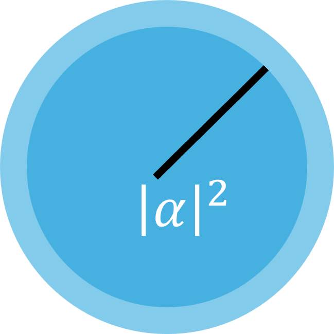 \(|\alpha |^2 = 0.7 \rightarrow \) \(70 \; \%\) Wahrscheinlichkeit für Zustand 0 Phase \(\varphi _\alpha = 45^\circ \) |
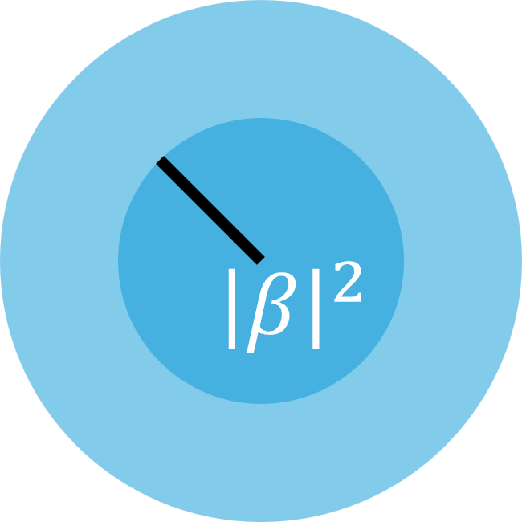 \(|\beta |^2 = 0.3 \rightarrow \) \(30 \; \%\) Wahrscheinlichkeit für Zustand 1 Phase \(\varphi _\beta = 135^\circ \) |
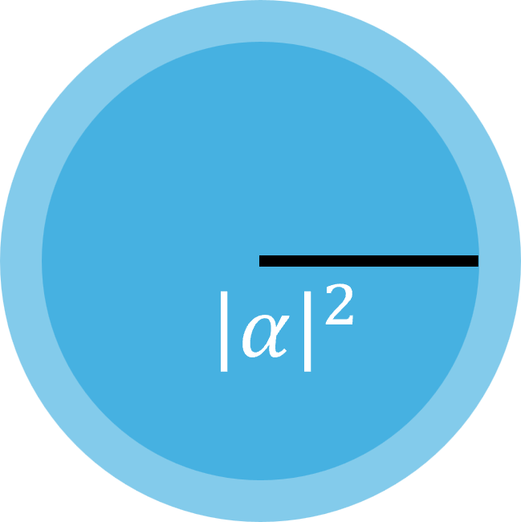 \(|\alpha |^2 = 0.7 \rightarrow \) \(70 \; \%\) Wahrscheinlichkeit für Zustand 0 Phase \(\varphi _\alpha = 0^\circ \) |
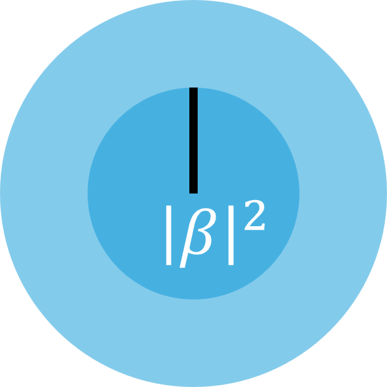 \(|\beta |^2 = 0.3 \rightarrow \) \(30 \; \%\) Wahrscheinlichkeit für Zustand 1 Phase \(\varphi _\beta = 135^\circ - 45^\circ = 90^\circ \) |
Um nur die relative Phase zu berücksichtigen, werden beide Seiten der Gleichung mit dem Faktor \(e^{-i*\varphi _\alpha }\)
multipliziert: \begin {equation*} |\psi \rangle \equiv r_\alpha |0\rangle + r_\beta *e^{i*(\varphi _\beta - \varphi _\alpha )}|1\rangle \end {equation*}
\(\varphi \) wird definiert als \(\varphi _\beta - \varphi _\alpha \)
\(\varphi \in \mathbb {R} [0, 2\pi ]\)
Somit ergibt sich die vereinfachte Darstellung [5]: \begin {equation*} |\psi \rangle = r_\alpha |0\rangle + r_\beta *e^{i*(\varphi )}|1\rangle \end {equation*} Da \(r_\alpha \) und \(r_\beta \) die Beträge der komplexe Zahlen \(\alpha \) und \(\beta \)
sind, gilt weiterhin: \(r_\alpha ^2 + r_\beta ^2 = 1\). Dadurch lassen sich \(r_\alpha \) und \(r_\beta \) als Längen in einem Einheitskreis darstellen (siehe
Abbildung 1) [6].
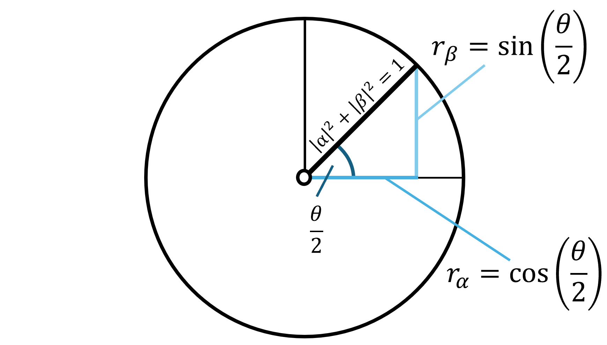
\(\theta \in \mathbb {R} \left [0, \pi \right ]\) ist der Winkel im Einheitskreis, welcher sich aus dem Verhältnis von \(r_\alpha \) und \(r_\beta \) ergibt. Somit gilt: \(r_\alpha = cos(\frac {\theta }{2})\) und
\(r_\beta = sin(\frac {\theta }{2})\)
Mit Hilfe der Trigonometrie lässt sich dies auch wie folgt darstellen:
\begin {equation*} |\psi \rangle = cos(\frac {\theta }{2})|0\rangle + sin(\frac {\theta }{2})*e^{i*\varphi }|1\rangle \end {equation*} Wobei \(\theta \) der Winkel zwischen dem Zustand \(|0\rangle \) und dem Zustand \(|\psi \rangle \) ist. Dies lässt sich, wie unten skizziert
auch auf der Bloch-Kugel visualisieren [5].
Ein weiteres Prinzip der Quantenphysik ist die Verschränkung. Sind zwei Qubits verschränkt, ist der Zustand des einen Qubits untrennbar mit dem Zustand des anderen verbunden. Durch die Messung eines Qubits entscheidet sich dieses für einen eindeutigen binären Zustand (0 oder 1) und die Superposition kollabiert. Die Wahrscheinlichkeit für den Zustand 0 beträgt \(|\alpha |^2\) und für den Zustand 1 beträgt sie \(|\beta |^2\). Das andere Qubit nimmt sofort den korrespondierenden Zustand an, unabhängig von der Entfernung zwischen den beiden Qubits. Warum dies so ist, ist bis heute nicht vollständig geklärt [4].
Quantencomputer können im Gegensatz zu klassischen Computern keine Variablen deklarieren und
Funktionen oder Schleifen erstellen. Stattdessen werden die Qubits durch Quantengatter manipuliert
analog zu logischen Gattern in klassischen Computern [8]. Wie bei Field-Programmable Gate
Array-Schaltungen (FPGA-Schaltungen) werden die Qubits durch eine Abfolge von Quantengattern
geführt, um Berechnungen durchzuführen. Bei klassischen Computern sind nicht alle Gatter
invertierbar, d.h., bei einem XOR-Gatter lässt sich anhand des Ausgangs nicht bestimmen, welche Bits
am Eingang anliegen. Bei Quantencomputern hingegen sind alle Quantengatter invertierbar [9].
Nachfolgend sind die wichtigsten Quantengatter aufgeführt:
Pauli-Gatter (X, Y, Z): Ein Pauli-Gatter dreht den Zustand eines Qubits um die x-, y- oder z-Achse der Bloch-Kugel [4].
| X | 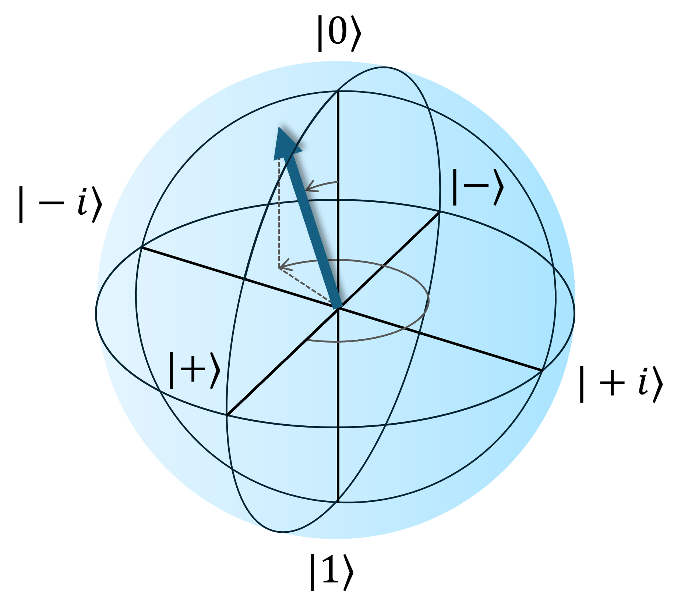 |
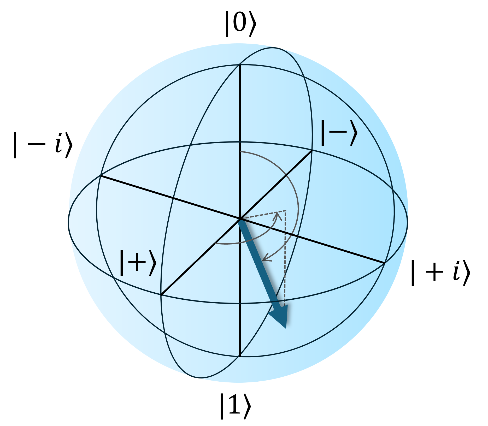 |
| Y | 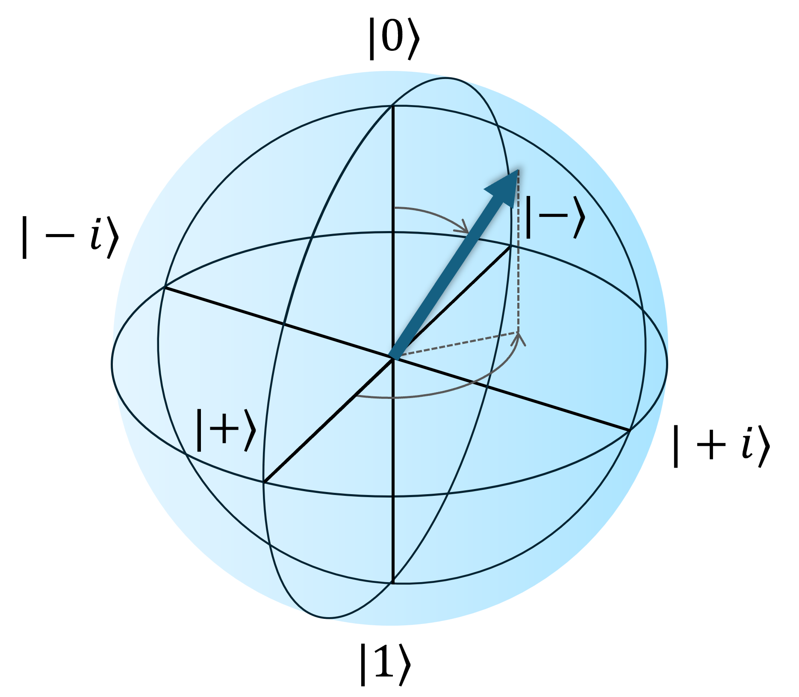 | 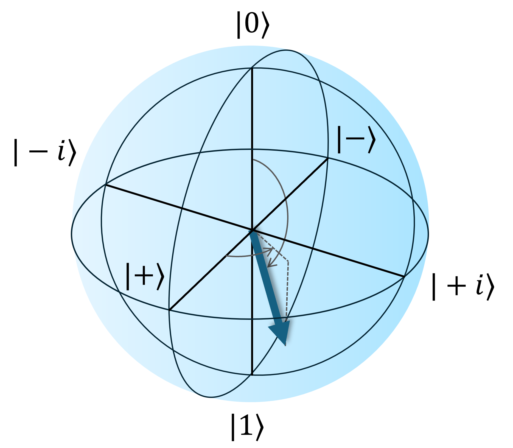 |
| Z |
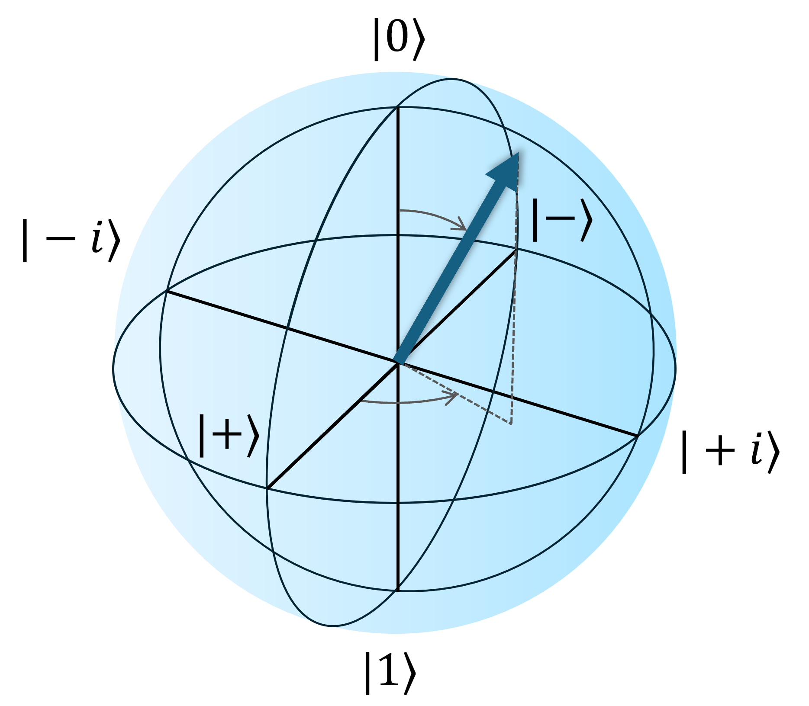 |
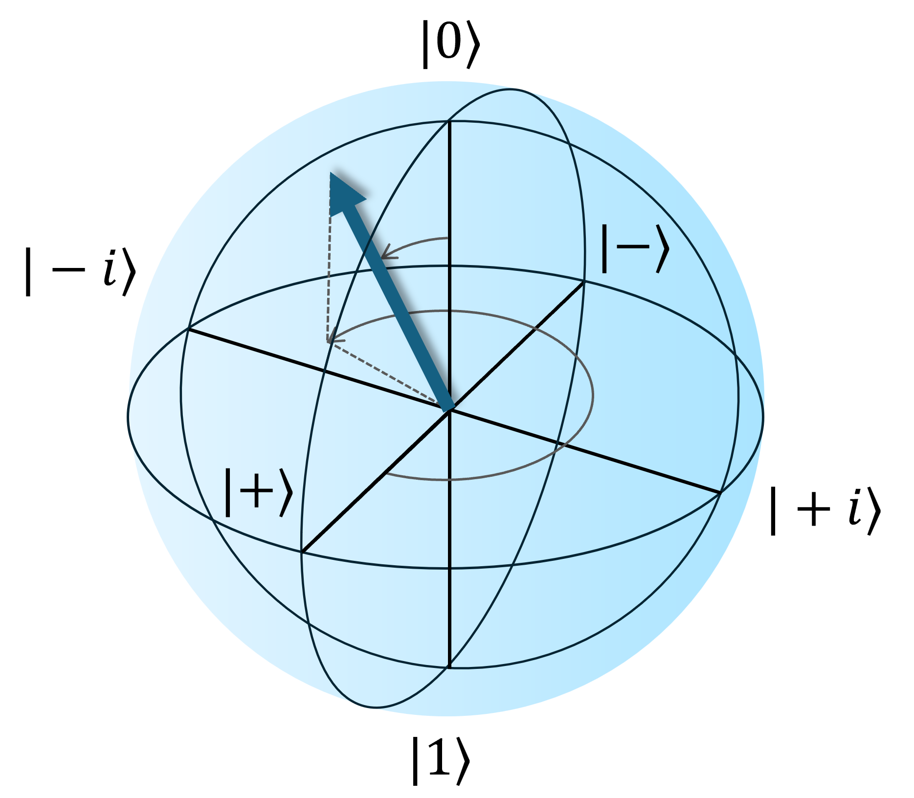 |
Hadamard-Gatter (H-Gatter): Ein Hadamard-Gatter erzeugt Superpositionen. Dies wird wie
folgt dargestellt: \(|0\rangle \rightarrow \frac {1}{\sqrt {2}}(|0\rangle + |1\rangle )\).
Jedes Quantengatter ist umkehrbar. Das spezielle beim Hadamard-Gatter ist, dass es in den
Ursprungszustand zurückführt: \(\frac {1}{\sqrt {2}}(|0\rangle + |1\rangle ) \rightarrow |0\rangle \) [8].
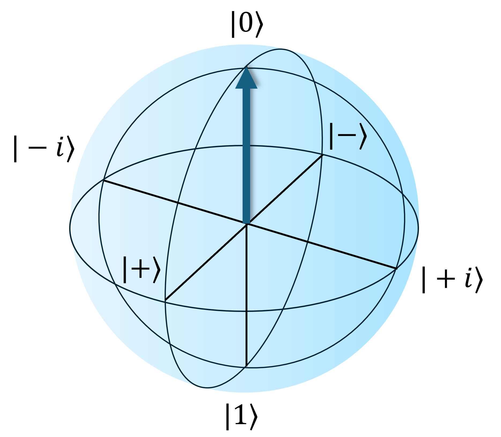 | 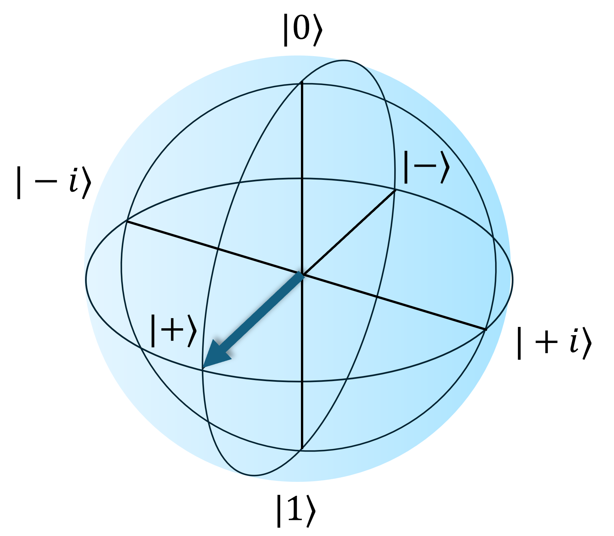 |
CNOT-Gatter: Ein CNOT-Gatter ist ein zwei-Qubit-Gatter, das den Zustand des zweiten Qubits ändert, wenn das erste Qubit im Zustand \(|1\rangle \) ist [8].
| Qubit 1 | Qubit 2 |
| 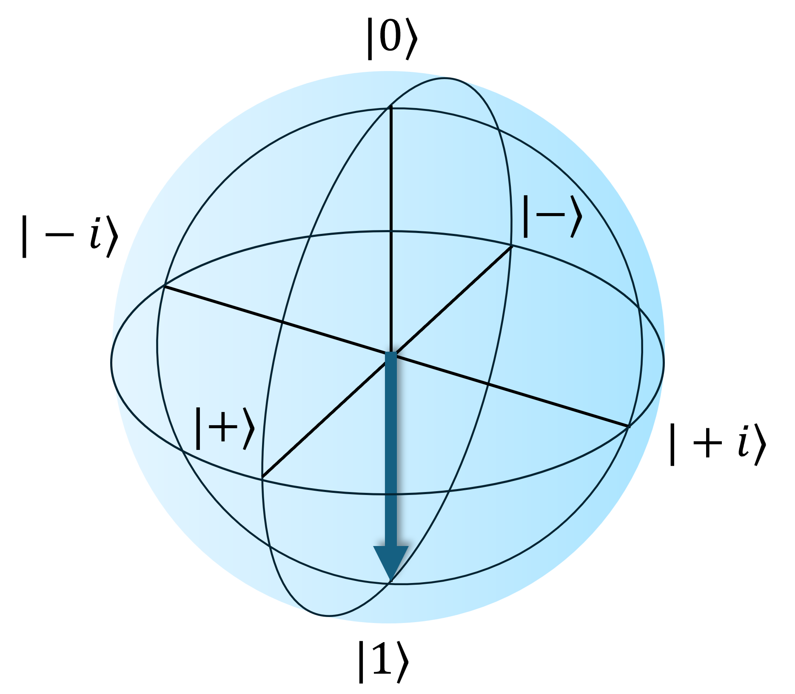 | |
Quantencomputer haben das Potenzial, bestimmte Rechenprobleme, für die klassische Computer Jahre
oder Jahrzehnte benötigen, in Sekunden oder Minuten zu lösen. Dies liegt an ihrer Fähigkeit, die
Prinzipien der Quantenmechanik wie Superposition und Verschränkung zu nutzen, um Berechnungen
parallel durchzuführen [10].
Während klassische Computer Informationen sequenziell verarbeiten, können Quantencomputer durch
die gleichzeitige Verarbeitung vieler Zustände eine erhebliche Beschleunigung bei spezifischen
Problemen erreichen. Ein Beispiel hierfür ist der Shor-Algorithmus (siehe Kapitel 3.2.2),
der die Faktorisierung grosser Zahlen, ein nahezu exponentiell wachsendes Problem, in
Polynomzeit ermöglicht [4]. Die Abbildung 3 zeigt einen Vergleich der Wachstumsraten.
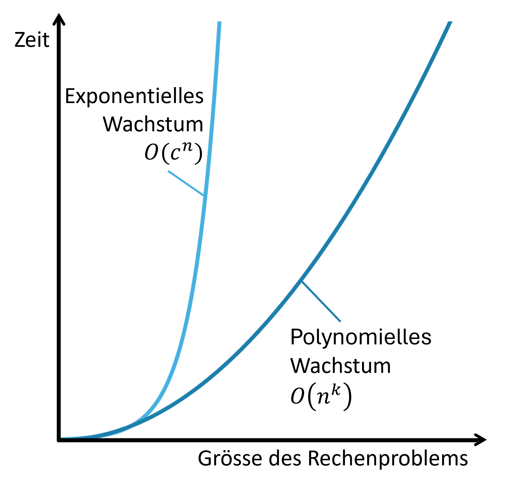
Ein weiterer bedeutender Algorithmus ist der Grover-Algorithmus, der für die Suche in unsortierten Datenbanken verwendet wird. Ein klassischer Algorithmus benötigt im Durchschnitt \(\frac {N}{2}\) Schritte, um ein Element in einer unsortierten Datenbank mit \(N\) Einträgen zu finden [11]. Mit der Landau-Notation wird dies ausgedrückt durch \(O(N)\), \(O\) steht hierbei für die Konstante und \(N\) für die Eingangsgrösse [12]. Der Grover-Algorithmus hingegen reduziert die Anzahl der benötigten Schritte auf etwa \(O(\sqrt {N})\) [11]. Die Abbildung 4 zeigt einen Vergleich der Wachstumsraten.
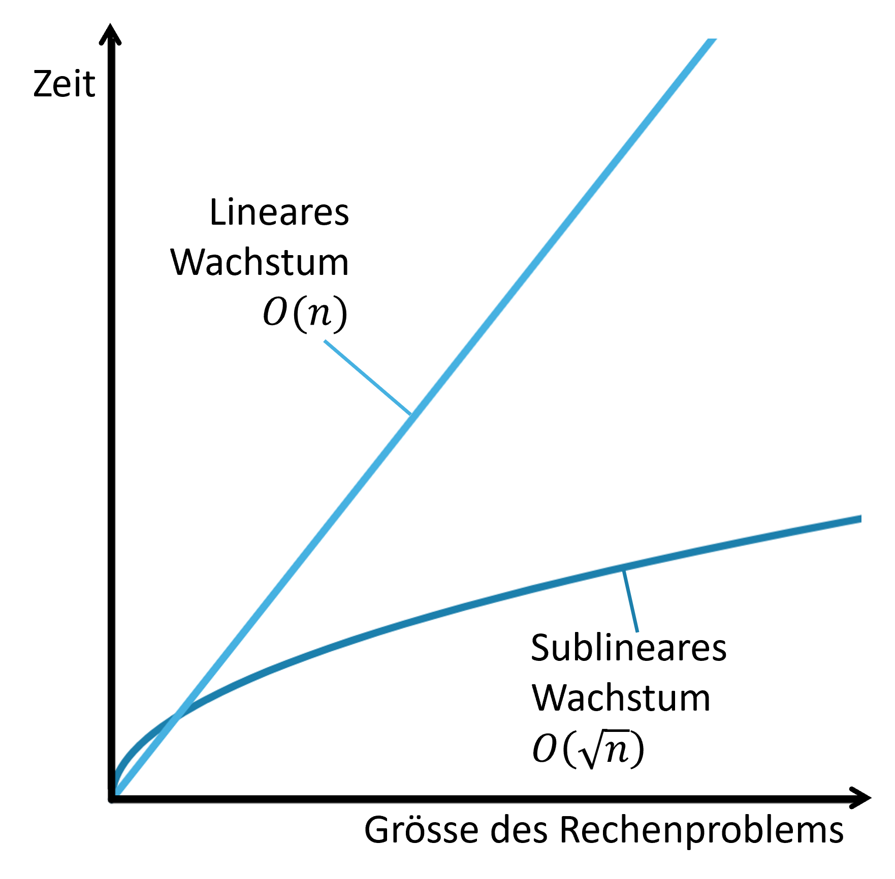
Es ist jedoch wichtig zu betonen, dass Quantencomputer keine universelle Beschleunigung für alle
Probleme bieten. Viele Probleme, die auf klassischen Computern exponentiell wachsen, können auch
auf Quantencomputern noch nicht effizient gelöst werden. Dazu wurden noch keine Algorithmen
entwickelt.
Klassische Computer können exponentiell wachsende Probleme nur schwer bewältigen.
Quantenalgorithmen wie der Shor- und Grover-Algorithmus ermöglichen eine signifikante Reduktion
der Rechenzeit [10].
Der aktuelle Einsatz von Quantencomputern findet vor allem in Forschung und Entwicklung statt, insbesondere an Universitäten, in Forschungseinrichtungen und in industriellen Pilotprojekten [10]. Mögliche zukünftige Anwendungsfelder liegen unter anderem in Optimierungsproblemen, Materialforschung und spezifischen Simulationsaufgaben. Breit verfügbare, wirtschaftlich skalierbare Praxisanwendungen sind zum aktuellen Zeitpunkt jedoch weiterhin begrenzt [13].
Es gibt noch einige Herausforderungen bei der Entwicklung von Quantencomputern, die überwunden werden müssen, bevor sie weit verbreitet eingesetzt werden können. Generell sind Qubits sehr anfällig für Störungen aus der Umwelt, wie thermisches Rauschen, elektromagnetische Felder oder Vibrationen, was zu Fehlern in Berechnungen führen kann. Aktuell haben Quantencomputer nur eine begrenzte Anzahl von Qubits, was ihre Leistungsfähigkeit einschränkt. Es gibt verschiedene physikalische Realisierungen von Qubits, wobei jede Technologie eigene Herausforderungen in Bezug auf Stabilität, Skalierbarkeit und Fehleranfälligkeit mit sich bringt. Supraleitende Qubits, wie sie bei den Quantencomputern von IBM (siehe Abbildung 5) und Google zum Einsatz kommen, erfordern Temperaturen nahe dem absoluten Nullpunkt (-273,15 °C = 0K), was einen erheblichen technischen Aufwand bedeutet [13].
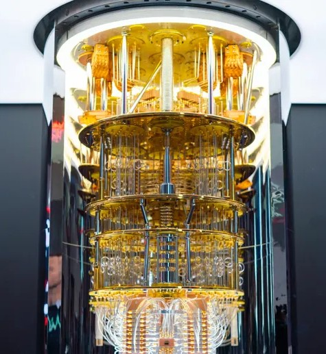
Einige Qubit-Technologien wie photonische Ansätze haben im Vergleich zu supraleitenden Systemen
andere technische Randbedingungen, etwa beim Temperaturbedarf. Unabhängig von der Technologie
bleiben jedoch zentrale Herausforderungen wie Fehleranfälligkeit, Skalierbarkeit und stabile
Informationsübertragung bestehen [13].
Um diese Herausforderungen zu bewältigen, werden verschiedene Ansätze verfolgt, darunter die
Entwicklung von Quantenfehlerkorrekturmethoden und die Erforschung neuer Materialien für
Qubits. Für ein logisches Qubit werden viele physikalische Qubits benötigt, um Fehler zu
korrigieren. Bis zum Jahr 2023 ging man davon aus, dass für ein logisches Qubit etwa 1000 bis
10’000 physikalische Qubits benötigt werden. Dann konnte ein Forschungsteam aus den
USA einen fehlerkorrigierten Quantenalgorithmus auf 48 logischen Qubits ausführen [15].
Q-Day ist ein Begriff, der den Zeitpunkt beschreibt, an dem Quantencomputer in der Lage sein
werden, praktische Probleme zu lösen, die für klassische Computer in akzeptabler Zeit unlösbar sind.
Gemäss der Roadmap der Quantenabteilung von IBM soll bis 2029 ein erster fehlertoleranter
Quantencomputer mit 200 logischen Qubits präsentiert werden. Bis 2033 sollen es dann 2000 logische
Qubits sein [1]. Um eine RSA-Verschlüsselung zu brechen, braucht es jedoch etwa 4000 logische Qubits
[16].
Das deutsche Bundesamt für Sicherheit in der Informationstechnik (BSI) hält einen Zeitpunkt in 10–16
Jahren (Stand 2025) realistisch, bis ein Quantencomputer mit 2000 logischen Qubits veröffentlicht wird
[1]. Je nach technischer Annahme und Bewertungsgrundlage variieren Prognosen zum Q-Day jedoch
deutlich. Selbst Expertinnen und Experten sind sich daher uneinig, wann Quantencomputer marktreif
sein werden.
Gemäss dem BSI dürfte es sich für die meisten Firmen jedoch nicht lohnen, einen Quantencomputer
mit mehr als 2000 logischen Qubits zu entwickeln, da diese Anzahl von logischen Qubits für
Anwendungen in der Industrie oder Forschung ausreicht [1].
Dieses Kapitel erläutert die Grundlagen und die Bedeutung moderner kryptografischer Verschlüsselungsverfahren, die für die Sicherheit der heutigen digitalen Infrastruktur von zentraler Bedeutung sind. Zunächst wird die Funktionsweise von symmetrischen und asymmetrischen Verschlüsselungsverfahren beschrieben sowie die Funktionsweise der RSA-Verschlüsselung erklärt und deren Anwendungsgebiete aufgezeigt. Anschliessend werden Methoden der Entschlüsselung erläutert, insbesondere der Brute-Force-Angriff. Des Weiteren wird der Shor-Algorithmus und dessen Zusammenhang mit dem Quantencomputer erklärt. Abschliessend wird die aktuelle Sicherheitslage heutiger Verschlüsselungsverfahren beurteilt und die Problematik der langfristigen Datensicherheit aufgezeigt.
Die symmetrische Verschlüsselung ist ein Kryptografieverfahren, bei dem derselbe geheime Schlüssel sowohl zum Verschlüsseln als auch zum Entschlüsseln von Daten verwendet wird. Auf dem Weg vom Sender zum Empfänger muss dieser Schlüssel sicher übertragen werden (siehe Abbildung 6).
Sobald dieser Schlüssel in die Hände eines Angreifers gelangt, sind alle Daten, die mit diesem Schlüssel geschützt sind, für den Angreifer lesbar [17]. Ein historisches Beispiel der symmetrischen Verschlüsselung war die Enigma-Maschine im Zweiten Weltkrieg, welche zur Übertragung von militärischen Nachrichten und Informationen verwendet wurde. Genau wie bei einer symmetrischen Verschlüsselung besass diese Maschine einen Schlüssel, mit dem man diese Nachrichten entschlüsseln konnte. Als die Engländer die Enigma-Maschine knackten, konnten sie alle Nachrichten entschlüsseln und auslesen, welche das deutsche Militär sendete. Daran zeigt sich das grundlegende Problem der symmetrischen Verschlüsselung: Durch das einmalige Erhalten des Schlüssels, ist es ein Leichtes die Verschlüsselung auszulesen [18].
Asymmetrische Verschlüsselung wird auch Public-Key-Kryptografie genannt und verwendet ein Schlüsselpaar aus einem öffentlichen und einem privaten Schlüssel. Asymmetrische Verschlüsselungsverfahren werden insbesondere eingesetzt, um einen sicheren Schlüsselaustausch in einem unsicheren Netzwerk zu ermöglichen. Zusätzlich kann durch die asymmetrische Verschlüsselung eine digitale Signatur erstellt werden, wodurch die Authentizität und Integrität einer Nachricht überprüft werden kann [17]. Durch die mathematische Verknüpfung der beiden Schlüssel ist es möglich, dass eine Nachricht, die mit dem öffentlichen Schlüssel verschlüsselt wurde, nur mit dem privaten Schlüssel entschlüsselt werden kann. Der öffentliche Schlüssel kann daher öffentlich verteilt werden, während der private Schlüssel geheim gehalten wird (siehe Abbildung 7). Die asymmetrische Verschlüsselungsverfahren werden insbesondere eingesetzt, um einen sicheren Schlüsselaustausch in einem unsicheren Netzwerk zu ermöglichen.
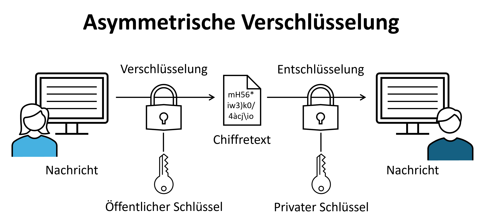
Die asymmetrische Verschlüsselung verursacht im Vergleich zur symmetrischen Verschlüsselung einen deutlich höheren Rechenaufwand. Deshalb wird in der Praxis häufig nur die asymmetrische Verschlüsselung zur Übertragung von Sitzungsschlüsseln, also temporären, symmetrischen Schlüsseln, für eine Kommunikationssitzung verwendet. Zusätzlich kann durch die asymmetrische Verschlüsselung eine digitale Signatur erstellt werden, wodurch die Authentizität und Integrität einer Nachricht überprüft werden kann [17].
Das Rivest-Shamir-Adleman-Verschlüsselungsverfahren (RSA) ist eines der bekanntesten und am
weitesten verbreiteten asymmetrischen Verschlüsselungsverfahren. Es verwendet ein Schlüsselpaar aus
einem öffentlichen und einem privaten Schlüssel. Der öffentliche Schlüssel dient zur Verschlüsselung von
Daten und Nachrichten, während der private Schlüssel zur Entschlüsselung verwendet wird. Die
Sicherheit des RSA-Verfahrens beruht auf der Schwierigkeit, extrem grosse Zahlen in ihre Primfaktoren
zu zerlegen [19].
Heute wird das RSA-Verfahren vor allem in digitalen Signaturen, Authentifizierungsmechanismen
sowie beim sicheren Austausch symmetrischer Schlüssel eingesetzt. Aufgrund des hohen
Rechenaufwands wird es nicht für die Verschlüsselung grosser Datenmengen verwendet. Das
National Institute of Standards and Technology (NIST) empfiehlt für RSA-Verfahren eine
Mindestschlüssellänge von 2048 Bit, um eine ausreichende Sicherheit zu gewährleisten [19].
Ein Algorithmus ist eine klare Schritt-für-Schritt-Anleitung, um ein Problem oder eine Aufgabe zu lösen, ähnlich wie ein Kochrezept. Somit sagt er aus, welche nächsten Schritte zur Lösung eines Problems zu führen. Da für die meisten Probleme verschiedene Algorithmen existieren, misst man diese typischerweise anhand des Ressourcenbedarfs, die sie benötigen, um das Problem zu lösen z.B. der Laufzeit oder des Speicherbedarfs.
Ein Brute-Force-Angriff ist eine Methode in der Informatik und Kryptografie, bei dem eine grosse Menge an verschiedenen Passwörtern nahezu gleichzeitig ausprobiert werden, um das gesuchte Passwort oder den Verschlüsselungscode zu knacken (siehe Abbildung 8). Es wird keinerlei Vorwissen oder ein Schlüssel benötigt, sondern eine riesige Menge unterschiedlicher Kombinationen ausprobiert, bis die richtige gefunden wurde [20].
Die Dauer eines sogenannten Brute-Force-Angriffs hängt von verschiedenen Faktoren ab, wie
beispielsweise der Schlüssellänge, der Komplexität, des Zeichensatzes oder auch der Rechenleistung des
Angreifers. Kurze oder einfache Passwörter können dadurch innerhalb kurzer Zeit geknackt werden,
während lange und komplexe Passwörter selbst mit der modernsten Hardware praktisch nicht mehr
innerhalb einer realistischen Zeit entschlüsselbar sind. Somit lohnt es nicht mehr, diese mit einem
Brute-Force anzugreifen [21]. Um die Brute-Force-Angriffe zu verhindern, setzen heutige Systeme auf
Schutzmechanismen wie eine Mindestlänge des Passworts, die Kombinationen aus Klein- und
Grossbuchstaben, Zahlen und Zeichen, Sperrmechanismen nach Fehlversuchen sowie das Hashen von
Passwörtern [21] [22]. Der LinkedIn-Vorfall im Jahr 2012 zeigt, wie wichtig es ist, sich vor solchen
Angriffen zu schützen und lange und komplexe Passwörter zu verwenden. Hacker hatten
damals 6,5 Millionen Passwörter von LinkedIn-Nutzern gehashed und veröffentlicht [23].
Das folgende Beispiel zeigt den Schutzmechanismus gegen einen Brute-Force-Angriff auf: Ein
8-stelliges Passwort aus Kleinbuchstaben hat \(26^8 = 2,1*10^{11}\) mögliche Variationen. Mit einer Rechenleistung
von 1 Milliarde Versuchen pro Sekunde würde ein Brute-Force-Angriff etwa 208 Sekunden
dauern. Bei einem 12-stelligen Passwort aus Gross- und Kleinbuchstaben sowie Zahlen
und Sonderzeichen (ca. \(72^{12} = 1,94 * 10^{22}\) Variationen) würde derselbe Angriff etwa 615’000 Jahre dauern
[24].
Der Shor-Algorithmus wurde 1994 von Peter W. Shor entwickelt und gilt als einer der bekanntesten Quantenalgorithmen. Er löst zwei zentrale mathematische Probleme in Polynomzeit: die Zerlegung sehr grosser Zahlen in ihre Primfaktoren sowie das Berechnen des ganzzahligen Logarithmuses. Ein normaler Algorithmus benötigt für diese Probleme eine exponentielle Zeit, was sie für grosse Zahlen praktisch unlösbar macht [25]. Den Ablauf des Shor-Algorithmuses zeigt Abbildung 9.
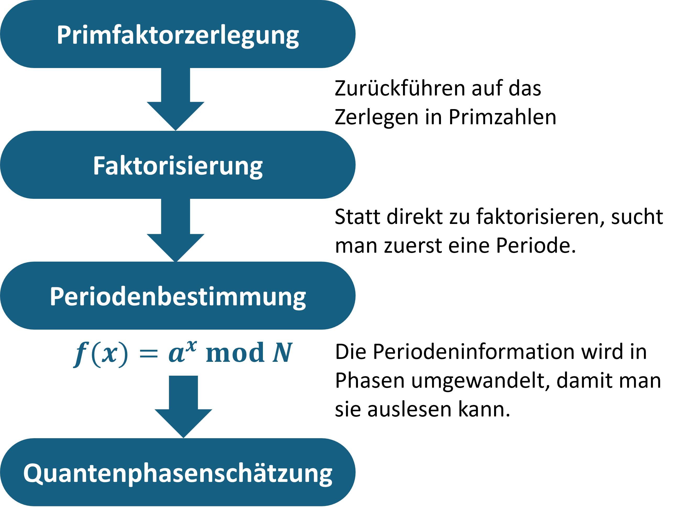
Der Shor-Algorithmus wird im Quantencomputer durch Quantengatter (siehe Kapitel 2.2)
umgesetzt. Diese bilden die Bausteine, mit denen der Algorithmus physikalisch realisiert wird.
Zu Beginn des Algorithmus werden Hadamard-Gatter auf mehrere Qubits angewendet. Sie erzeugen
eine Superposition, sodass der Quantencomputer viele mögliche Rechenwege gleichzeitig verfolgen
kann. Während ein klassischer Computer jeden Wert einzeln ausprobieren müsste, kann der
Quantencomputer diese Berechnungen parallel durchführen.
Anschliessend kommen kontrollierte Quantengatter wie CNOT- und kontrollierte Phasengatter zum
Einsatz. Sie verschränken die Qubits miteinander, sodass ihre Zustände voneinander abhängen. In
diesem Schritt wird die folgende Funktion ausgewertet: \begin {equation*} f(x)=a^x \bmod N \end {equation*} Dabei werden Potenzen von \(a\) berechnet und
jeweils nur der Teilerrest (auch Modulo genannt) von \(\frac {a^{x}}{N}\) betrachtet. Die so entstehenden
Werte wiederholen sich nach einer gewissen Anzahl Schritte, diese Wiederholung nennt man
Periode. Der Quantencomputer speichert diese Periodeninformation nicht als klassische Zahl,
sondern repräsentiert sie in den relativen Phasen (Winkel \(\varphi \) der Bloch-Kugel) der Qubits.
Der wichtigste quantenmechanische Schritt ist anschliessend die Quanten-Fourier-Transformation
(QFT). Sie besteht aus einer Abfolge von Hadamard-Gattern und kontrollierten Rotationsgattern \(R_k\),
welche die Phasen der Qubits gezielt verändern. Dadurch wird die zuvor versteckte
Periodeninformation so umgeformt, dass sie bei der anschliessenden Messung sichtbar wird. Zum
Schluss korrigieren SWAP-Gatter die Reihenfolge der Qubits, da die QFT die Resultate in
umgekehrter Bitreihenfolge liefert. Kennt man die Periode, lassen sich daraus mit klassischen
Rechenschritten die Primfaktoren der ursprünglichen Zahl bestimmen [25]. Abbildung 10
zeigt eine vereinfachte Darstellung des Quantenschaltkreises für den Shor-Algorithmus.
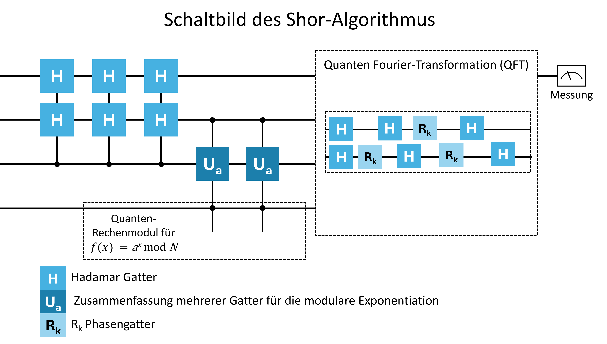
Wird beispielsweise der RSA-Algorithmus mit einer Schlüssellänge von 2048 Bit und einer
Sicherheitsstufe von 112 Bit verwendet, dann würde ein herkömmlicher Algorithmus mehrere
Milliarden Jahre benötigen, um den zugehörigen privaten Schlüssel durch Primfaktorzerlegung zu
berechnen. Durch den Shor-Algorithmus könnte dieser Schlüssel mit einem ausreichend
leistungsfähigen Quantencomputer innerhalb von Stunden bestimmt werden. Konkret bedeutet
das, dass ein klassischer Algorithmus ca. \(5*10^{33}\) Rechenschritte benötigt, um den Schlüssel zu
berechnen, während der Shor-Algorithmus lediglich \(9*10^{9}\) Rechenschritte benötigen würde [25].
Der aktuelle Rekord (Stand 2019) für die Faktorisierung mit dem Shor-Algorithmus liegt bei 65531,
welche in die Primfaktoren 19 und 3449 zerlegt wurde [26]. Dies ist weit davon entfernt, die
Verschlüsselungstechnik zu revolutionieren. Heutige Verschlüsselungsverfahren nutzen semiprime
Zahlen (also Zahlen mit genau zwei Primfaktoren) mit mehreren hundert Stellen [27]. Dabei steigt der
Bedarf an Qubits linear mit der Bitlänge der Zahl an, was die Faktorisierung grosser Zahlen (z.B. 2048
Bit) aktuell unmöglich macht [26].
Verschlüsselungsverfahren sind heute in nahezu allen digitalen Bereichen unverzichtbar. Sie stellen sicher, dass digitale Informationen vertraulich, unverändert, authentisch und verbindlich bleiben [22]. Aktuell gelten die gängigsten Verschlüsselungsverfahren als praktisch sicher, da ihre Entschlüsselung in einer realistischen Zeit mit heutigen Computern und deren Rechenleistung nicht möglich ist [21]. Allerdings würde die Entwicklung von Quantencomputern und deren Algorithmen die Sicherheit der heutigen Verschlüsselungsverfahren infrage stellen [25]. Vergleich der Sicherheitsniveaus verschiedener Verschlüsselungsverfahren siehe Abbildung 11.
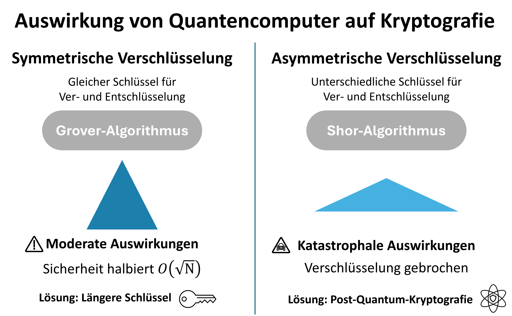
Moderne Informationssysteme sind heute stark von einer funktionierenden Verschlüsselung abhängig.
Es fällt nicht nur der Finanzsektor darunter, sondern die gesamte digitale Infrastruktur weltweit, das
heisst auch staatliche Verwaltungen, das Gesundheitswesen, industrielle Unternehmen sowie private
Kommunikation [22]. Gemäss Christian Weber setzen Anwendungen wie Online-Banking,
E-Mail-Dienste, Cloud-Speicher oder auch die elektronische Identität (E-ID) auf sichere
Verschlüsselung ihrer Daten, um langfristig zuverlässig sein zu können. Ein Versagen von genau diesen
derzeit sicheren Verschlüsselungsverfahren würde somit nicht nur technische Probleme verursachen,
sondern auch wirtschaftliche und gesellschaftliche Konsequenzen nach sich ziehen (siehe Interview im
Anhang).
Die heutige Sicherheit der Verschlüsselungsverfahren basiert primär auf der Annahme einer
begrenzten Rechenleistung der klassischen Computer. Asymmetrische Verfahren wie zum
Beispiel RSA gelten als sicher, solange keine praktikable Möglichkeit besteht, die zugrunde
liegenden mathematischen Probleme effizient zu lösen [22]. Quantencomputer würden genau
diese grundlegende Ausgangslage verändern, da der Shor-Algorithmus die Faktorisierung
grosser Zahlen in realistischer Zeit ermöglichen kann [25]. Christian Weber bestätigt, die
besten heutigen Verschlüsselungsverfahren wären nicht mehr sicher (siehe Interview im
Anhang).
Gemäss Christian Weber liegt ein zentrales Problem in der langfristigen Datensicherheit.
Daten, die heute verschlüsselt gespeichert werden, können zu einem späteren Zeitpunkt, bei
Marktreife eines Quantencomputers, entschlüsselt werden. Dies wird Harvest now, decrypt
later-Angriff (heute sammeln, später entschlüsseln) genannt (siehe Interview im Anhang).
Besonders kritische Daten wie staatliche Geheimnisse, Gesundheitsdaten oder auch Finanzdaten sind
davon betroffen. Auch wenn die Daten momentan als sicher gelten, können diese zu einem späteren
Zeitpunkt entschlüsselt und kompromittiert werden [25].
Trotz der bekannten Risiken, die durch die Entwicklung höherer Rechenleistung durch
Quantencomputer entstehen, so Christian Weber, werden momentan nur wenige flächendeckende
Massnahmen zur Entwicklung quantensicherer Verfahren getroffen. Viele Firmen und Institute sind
sich der Problematik nicht bewusst oder schätzen die Risiken zu gering ein (siehe Interview im
Anhang).
Die aktuelle Sicherheitslage ist stark von der Annahme eines stagnierenden Fortschritts in der Entwicklung der Quantencomputer abhängig [25]. Sollte gemäss diese Annahme nicht eintreffen, wären die heutigen Verschlüsselungsverfahren in ihrer Sicherheit stark gefährdet. Zusammenfassend lässt sich sagen, dass die heutige Sicherheitslage als funktional gilt, allerdings nicht zukunftssicher ist (siehe Interview mit Christian Weber im Anhang).
Angesichts der drohenden Gefahr durch Quantencomputer arbeiten Forschungseinrichtungen und
Standardisierungsgremien weltweit an der Entwicklung quantensicherer Verschlüsselungsverfahren. Das
NIST hat bereits erste Standards für Post-Quanten-Kryptografie (PQC) Verfahren erarbeitet und im
Jahr 2024 veröffentlicht [28]. PQC-Algorithmen sind so konzipiert, dass sie auf klassischen
Computern laufen, aber gleichzeitig gegen Angriffe von Quantencomputern resistent sind [27].
Gemäss Christian Weber stellt die Umstellung auf PQC jedoch eine enorme Herausforderung dar.
Bestehende Systeme, Protokolle und Infrastrukturen müssen grundlegend überarbeitet werden, was
erhebliche Investitionen erfordert. Zudem fehlt es derzeit an koordinierten Umsetzungsplänen auf
staatlicher und internationaler Ebene, was eine flächendeckende Migration erschwert (siehe Interview
im Anhang).
Ein weiteres Problem ist die begrenzte Rechenleistung und Speicherkapazität bestehender Systeme.
PQC-Algorithmen benötigen oft grössere Schlüssel und mehr Rechenressourcen als herkömmliche
Verfahren, was insbesondere bei älteren oder eingebetteten Systemen zu Kompatibilitätsproblemen
führen kann [29].
Gemäss Christian Weber ist trotz dieser Herausforderungen die frühzeitige Vorbereitung auf die
Post-Quanten-Ära unerlässlich. Experten empfehlen, bereits heute mit der Planung und schrittweisen
Implementierung quantensicherer Verfahren zu beginnen, um für den Zeitpunkt gewappnet zu sein,
an dem leistungsfähige Quantencomputer verfügbar werden (siehe Interview im Anhang).
Grundsätzlich zielt Verschlüsselung nicht auf ewige Sicherheit ab, sondern nur darauf, Daten so lange
zu schützen, bis sie ihren Wert verlieren wie z.B. Patente deren Schutz nach einigen Jahren abläuft
(siehe Interview mit Christian Weber im Anhang).
Diese Arbeit hat gezeigt, dass Quantencomputer eine erhebliche Bedrohung für die Sicherheit aktueller
Verschlüsselungsverfahren darstellen. Solange die praktische Entwicklung von Quantencomputern unter
der kritischen Grenze von etwa 4000 logischen Qubits verbleibt, bleibt der RSA grundsätzlich sicher.
Allerdings zeigt die aktuelle Roadmap von IBM, dass diese Grenze in den 2030er Jahren erreicht
werden könnte. Die entscheidende Erkenntnis ist jedoch: Der Handlungsbedarf besteht
bereits heute, nicht erst bei Marktreife. Besonders kritisch sind dabei langfristig vertrauliche
Daten, die heute gesammelt und gespeichert werden, um sie in der Zukunft zu entschlüsseln.
Die vom NIST standardisierten PQC-Verfahren bieten einen bewährten Rahmen für diese Transition.
Besonders wichtig ist, dass diese Algorithmen bereits heute in kritischen Infrastrukturen wie
Bankensystemen, Gesundheitswesen und Regierungskommunikation implementiert werden müssen.
Harvest now, decrypt later–Angriffe unterstreichen die Dringlichkeit, da Daten, die heute mit
RSA verschlüsselt werden, mit einem zukünftigen Quantencomputer mit 4000 logischen
Qubits ausgelesen werden können. Daher müssen PQC-Lösungen schon jetzt eingeführt
werden.
Die in dieser Arbeit untersuchte Fragestellung lautete: „Welche Bedrohung stellen Quantencomputer
für die Sicherheit aktueller Verschlüsselungsverfahren dar, und inwiefern wären dadurch Daten
gefährdet, wenn morgen ein Quantencomputer marktreif wäre?"
Ein Quantencomputer mit über 4000 logischen Qubits würde die mathematischen Grundlagen der
heute verwendeten asymmetrischen Verschlüsselungsverfahren vollständig aufheben. Dadurch
wäre es möglich, alle damit verschlüsselten Daten innerhalb kurzer Zeit zu entschlüsseln.
Bei Quantencomputer mit 2000 logischen Qubits, welcher für Forschungs- und Industriezwecke
ausreichen sollte, wäre die gängigsten Verschlüsselungsverfahren noch sicher. Allerdings könnten
gezielte Angriffe auf schwächere Systeme oder Protokolle möglich sein, was die Notwendigkeit
unterstreicht, frühzeitig auf quantensichere Algorithmen umzustellen.
Wie jede technologische Entwicklung haben auch Quantencomputer Chancen und Risiken. Während
sie die Sicherheit bestehender Verschlüsselungsverfahren bedrohen, bieten sie gleichzeitig die
Möglichkeit, für mathematische Beweise und effiziente Algorithmen für komplexe Probleme. Der
Zeitpunkt des Q-Day ist ungewiss. Damit bleiben viele Fragen offen. Auch können technologische
Durchbrüche die Entwicklung beschleunigen, staatliche Regulierungen beispielsweise könnten sie
hingegen verzögern.
Selbst Fachpersonen verstehen noch nicht alle Verhaltensmerkmale der quantenphysikalischen Welt.
Viel Wissen und Fachpersonen mit diesem Wissen müssen aufgebaut werden. Der vorgegebene Umfang
dieser Berufsmaturitätsarbeit erlaubte nur einen kleinen Einblick in die komplexe Thematik der
Quantencomputer und deren Auswirkungen auf die Datensicherheit.
Notation zur Darstellung von Quantenzuständen, z.B. \( |0\rangle \) und \( |1\rangle \) für die Basiszustände
eines Qubits. Diese repräsentieren einen Vektor in einem zweidimensionalen komplexen
Vektorraum. Ket \( | \psi \rangle = \begin {pmatrix} \alpha \\ \beta \end {pmatrix} \) steht für einen Spaltenvektor, während Bra \( \langle \psi | = \begin {pmatrix} \alpha & \beta \end {pmatrix} \) für den Zeilenvektor steht.
\(|0\rangle \) steht für den zugehörigen Spaltenvektor \(\begin {pmatrix} 1 \\ 0 \end {pmatrix}\) und \(|1\rangle \) entspricht \(\begin {pmatrix} 0 \\ 1 \end {pmatrix}\) [4].
Integrierte Schaltkreise, die nach der Herstellung vom Benutzer programmiert werden können, um verschiedene logische Funktionen zu erfüllen. Sie bestehen aus einer Matrix von konfigurierbaren Logikblöcken und programmierbaren Verbindungsnetzwerken, die es ermöglichen, komplexe digitale Schaltungen zu erstellen.
Eine mathematische Methode zur Zerlegung eines Signals in seine Frequenzkomponenten. Sie wandelt ein zeitabhängiges Signal in ein frequenzabhängiges Signal um, indem sie das Signal als Summe von Sinusfunktionen unterschiedlicher Frequenzen und Amplitudendarstellt [30].
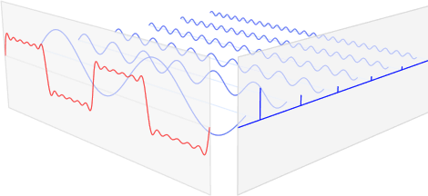
Eine Einwegfunktion zum Verschlüsseln von Daten. Sie nimmt einen lesbaren Text und verwandelt ihn in eine völlig andere Zeichenkette mit einer bestimmten Länge. Im Gegensatz zu anderen Verschlüsselungsalgorithmen, die Daten umwandeln, ist Hashing jedoch fast unmöglich rückgängig zu machen [31].
Da die \(\sqrt {-1}\) nicht als reelle Zahl definiert ist, wurde die imaginäre Zahl \( i \) eingeführt, wobei \( i^2 = -1 \). Komplexe Zahlen sind zusammengesetzt aus Real- und Imaginärteil. Sie werden ausgedrückt als \(\alpha = Re(\alpha ) + Im(\alpha )i\), wobei \( Re(\alpha ) \) der Realteil und \( Im(\alpha ) \) der Imaginärteil ist. Komplexe Zahlen können aber auch mit Polarkoordinaten dargestellt werden, also mit Betrag (\(r_\alpha \)) und Winkel (\(\varphi _\alpha \)).
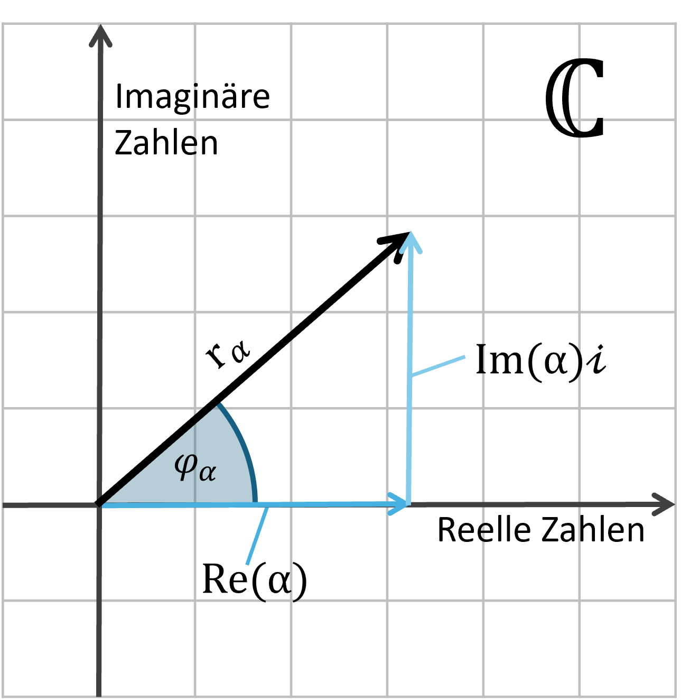
Eine mathematische Notation zur Analyse der Laufzeit von Algorithmen. Sie gibt an, wie schnell eine Funktion wächst, wenn die Eingabegrösse gegen unendlich geht. Zum Beispiel bedeutet \( O(n^2) \), dass die Laufzeit eines Algorithmus im schlimmsten Fall proportional zum Quadrat der Eingabegrösse \( n \) wächst [12].
Eine mathematische Operation, die den Rest einer Division zweier Zahlen angibt. Zum Beispiel ist \( 7 \mod 3 = 1 \) (oder auch geschrieben \( 7 \; \% \; 3 = 1 \)), da 7 : 3 = 2 mit einem Rest von 1 ergibt.
Ein Polynom ist eine mathematische Funktion der Form \( P(n) = a_k n^k + a_{k-1} n^{k-1} + ... + a_1 n + a_0 \), wobei \( a_i \) Konstanten sind und \( k \) eine natürliche Zahl ist. Ein Polynom wächst also nicht exponentiell, sondern in einem viel langsameren Tempo. Ein Algorithmus läuft in Polynomzeit, wenn seine Laufzeit durch ein Polynom in Bezug auf die Eingabegrösse \( n \) beschrieben werden kann, also \( O(n^k) \) für einen konstanten Exponent \( k \).
Ein logisches Gatter, das zwei Eingänge hat und genau dann eine 1 ausgibt, wenn die Anzahl der Eingänge mit dem Wert 1 ungerade ist.
| A | B | A XOR B |
| 0 | 0 | 0 |
| 0 | 1 | 1 |
| 1 | 0 | 1 |
| 1 | 1 | 0 |
Field-Programmable Gate Array (feldprogrammierbare Gatter-Anordnung)
National Institute of Standards and Technology
Quanten-Fourier-Transformation
Quantenbit
Rivest-Shamir-Adleman
Post-Quanten-Kryptographie
S. Patsch. „Bedrohung der Verschlüsselung“. In: c’t - Magazin für Computertechnik 23 (2025), S. 24–27.
C. Tardi. Understanding Moore’s Law: Is It Still Relevant in 2025? Investopedia, 2025. [Online] Available: https://www.investopedia.com/terms/m/mooreslaw.asp (Abrufdatum 20.01.2026).
TSMC. 3nm Process Technology. TSMC, 2022. [Online] Available: https://www.tsmc.com/english/dedicatedFoundry/technology/logic/l_3nm (Abrufdatum 21.01.2026).
K. Bashiri. Quantencomputing. Bonn: Rheinwerk Computing, 2025, S. 13, 16–17, 93–94, 192, 227, 318, 329, 234–236.
W. /. H. Hamburg. Wie funktioniert ein Quantencomputer? 2024. [Online] Available: https://www.youtube.com/watch?v=JWf_g_ForGk (Abrufdatum 21.01.2026).
mu-hoch-3. Die Bloch-Kugel (einfach erklärt). 2020. [Online]. Available: https://www.youtube.com/watch?v=FrvzD9YxnQQ (Abrufdatum 21.01.2026).
S. Meister. Bloch sphere. Wikimedia, 2009. [Online] Available: https://en.wikipedia.org/wiki/File:Bloch_sphere.svg (Abrufdatum 21.11.2025).
F. Neukart. „Quantengatter“. In: c’t - Magazin für Computertechnik 06 (2020), S. 146–151.
B. Baumann. „Einführung in Quantencomputer“. In: c’t - Magazin für Computertechnik 13 (2022), S. 64–69.
F. Meyer. Für sehr kleine Problemgrössen ist ein klassischer Computer schneller. ETH Zürich, 2023. [Online] Available: https://ethz.ch/de/news-und-veranstaltungen/eth-news/news/2023/05/fuer-sehr-kleine-problemgroessen-ist-ein-klassischer-computer-schneller.html (Abrufdatum 04.12.2026).
3Blue1Brown. Grover’s Algorithm. 2026. [Online] Available: https://www.3blue1brown.com/lessons/grover (Abrufdatum 18.12.2026).
HappyCoders.eu. O-Notation und Zeitkomplexität einfach erklärt. HappyCoders.eu, 2026. [Online] Available: https://www.happycoders.eu/de/algorithmen/o-notation-zeitkomplexitaet/ (Abrufdatum 25.01.2026).
S. J. Bigelow. Quantenfehlerkorrektur: Verfahren und Herausforderungen. 2025. [Online] Available: https://www.computerweekly.com/de/feature/Quantenfehlerkorrektur-Verfahren-und-Herausforderungen (Abrufdatum 28.01.2026).
D. Spiegel. IBM Quantum System One: Deutschlands erster Quantencomputer kostet 11.621 Euro Monatsmiete. Der Spiegel, 2021. [Online] Available: https://www.spiegel.de/netzwelt/netzpolitik/ibm-quantum-system-one-deutschlands-erster-quantencomputer-kostet-11-621-euro-monatsmiete-a-eb402a65-d78a-41f7-9411-047bc99db079 (Abrufdatum 21.01.2026).
K. Menne. Quantencomputer neuer Ansatz verbessert Quantenchips dramatisch. Spektrum, 2023. [Online] Available: https://www.spektrum.de/news/quantencomputer-neuer-ansatz-verbessert-quantenchips-dramatisch/2200904 (Abrufdatum 20.01.2026).
I. Daily. Q-Day 2030. 2026. [Online] Available: https://www.it-daily.net/it-sicherheit/datenschutz-grc/q-day-2030 (Abrufdatum 23.01.2026).
National Institute of Standards and Technology. Guideline for Using Cryptographic Standards in the Federal Government: Cryptographic Mechanisms. Special Publication 800-175B Rev. 1. NIST, 2020, S. 20–23.
S. Singh. The Code Book: The Science of Secrecy from Ancient Egypt to Quantum Cryptography. New York: Doubleday, 1999, S. 9–11.
National Institute of Standards and Technology. Recommendation for Pair-Wise Key Establishment Schemes Using Discrete Logarithm Cryptography. Techn. Ber. NIST, 2018.
O. Foundation. Brute Force Attack. OWASP Foundation, 2023. [Online] Available: https://owasp.org/www-community/attacks/Brute_force_attack (Abrufdatum 26.12.2025).
National Institute of Standards and Technology. Digital Identity Guidelines: Authentication and Lifecycle Management. Techn. Ber. Special Publication 800-63B. NIST, 2017, S. 5–7, 69. url: https://doi.org/10.6028/NIST.SP.800-63b (besucht am 26. 12. 2025).
A. J. Menezes, P. C. van Oorschot und S. A. Vanstone. Handbook of Applied Cryptography. Boca Raton: CRC Press, 1996, S. 3–8, 272, 308–340.
T. Verge. LinkedIn hacked: over six million passwords compromised and published. The Verge, 2013. [Online] Available: https://www.theverge.com/2012/6/7/3071707/linkedin-hack-six-million-passwords-leaked (Abrufdatum 26.12.2025).
W. contributors. Aussprobieren von Passwörtern. 2024. [Online] Available: https://de.wikipedia.org/wiki/Passwort\#Ausprobieren_von_Passwörtern (Abrufdatum 21.01.2026).
J. Mandrysch. „Über den Shor-Algorithmus und Quantencomputer“. Magisterarb. Münster: Westfälische Wilhelms-Universität Münster, 2016.
R. Panknin. Wie Primzahlen helfen, den Quantencomputer zu verbessern. Forschungszentrum Jülich, 2019. [Online] Available: https://www.fz-juelich.de/de/aktuelles/news/feature/wie-primzahlen-helfen-den-quantencomputer-zu-verbessern (Abrufdatum 26.01.2026).
T. M. (Moderation). Quantencomputer: Endlich verständlich. SRF Einstein, 2023. [Online] Available: https://www.srf.ch/play/tv/einstein/video/quantencomputer-endlich-verstaendlich?urn=urn:srf:video:dab3c078-7362-4bd4-babb-ea4faec33d84 (Abrufdatum 26.01.2026).
National Institute of Standards and Technology. Post-Quantum Cryptography. 2025. [Online] Available: https://www.nist.gov/pqcrypto (Abrufdatum 28.01.2026).
Fraunhofer SIT. QuantumRISC. [Online] Available: https://www.sit.fraunhofer.de/de/quantumrisc/ (Abrufdatum 28.01.2026).
R. Vink. Understanding the Fourier Transform by Example. 2017. [Online] Available: https://www.ritchievink.com/blog/2017/04/23/understanding-the-fourier-transform-by-example/ (Abrufdatum 26.01.2026).
Dashlane. Was bedeutet Hashen? 2026. [Online] Available: https://www.dashlane.com/de/blog/was-versteht-man-unter-passwort-hashing (Abrufdatum 22.01.2026).
Das Interview wurde am 27. Oktober 2025 telefonisch geführt.
Welche Verschlüsselungsverfahren wären Ihrer Einschätzung nach am stärksten bedroht, wenn morgen
ein leistungsfähiger Quantencomputer verfügbar wäre?
Grundsätzlich wären alle heute eingesetzten Verschlüsselungsverfahren betroffen. Nahezu sämtliche
aktuell verwendeten kryptografischen Algorithmen gelten im Prinzip als bedroht, da es derzeit kein in
der Praxis breit eingesetztes, vollständig quantensicheres Verfahren gibt. Zwar existieren bereits erste
quantensichere Algorithmen, die auch auf klassischer Hardware lauffähig sind, diese befinden sich
jedoch noch nicht im produktiven Einsatz, sondern überwiegend im Forschungs- oder Laborumfeld.
Kritische Infrastrukturen wie Online-Banking-Systeme operieren nicht im Labor, sondern in realen,
global vernetzten Umgebungen.
Was versteht man unter quantensicheren Algorithmen und wie unterscheiden sie sich von klassischen
Verschlüsselungsverfahren?
Unter quantensicheren Algorithmen versteht man kryptografische Verfahren, die so aufgebaut sind,
dass selbst ein Quantencomputer sie nicht in einer praktikablen Zeit brechen kann, auch nicht durch
Brute-Force-Angriffe. Verschlüsselung zielt grundsätzlich nicht auf ewige Sicherheit ab, sondern darauf,
Daten so lange zu schützen, bis sie ihren Wert verlieren. Dieses Prinzip gilt sowohl für klassische als
auch für quantensichere Verfahren. Der wesentliche Unterschied liegt in der mathematischen
Grundlage, da Quantencomputer völlig anders arbeiten als klassische von-Neumann-Rechner und
deshalb neue Konzepte erfordern.
Welche konkreten Schritte werden derzeit unternommen, um digitale Systeme auf die Zeit
leistungsfähiger Quantencomputer vorzubereiten?
Aktuell werden vor allem Standardisierungsbemühungen in internationalen Arbeitsgruppen verfolgt.
Ein koordinierter, staatlich gesteuerter Ansatz ist jedoch kaum erkennbar. Es existieren keine
umfassenden Analysen nationaler Infrastrukturen hinsichtlich quantenbedingter Risiken. Besonders
problematisch ist dies in Bereichen wie dem Gesundheitswesen, in denen grosse Mengen sensibler
Daten gespeichert werden. Auf politischer Ebene ist das Thema bislang nur unzureichend
angekommen.
Welche Branchen oder Institutionen wären besonders betroffen, wenn heutige Verschlüsselung plötzlich
unsicher würde?
Betroffen wären praktisch alle Bereiche. Banken sind aufgrund finanzieller Interessen besonders
attraktive Ziele, ebenso blockchainbasierte Systeme. Das Militär wäre massiv betroffen, da moderne
Waffensysteme vollständig auf verschlüsselter Kommunikation basieren. Auch Krankenhäuser,
Verwaltungen und Unternehmen wären stark eingeschränkt, sobald öffentliche Netze genutzt werden.
Sobald Verschlüsselung nicht mehr zuverlässig funktioniert, entsteht ein erhebliches Sicherheitsrisiko.
Wie gross schätzen Sie die Gefahr ein, dass heute verschlüsselt gespeicherte Daten in Zukunft
nachträglich entschlüsselt werden?
Diese Gefahr ist aus meiner Sicht sehr hoch und liegt langfristig nahezu bei hundert Prozent. Schon
heute lassen sich viele Verschlüsselungsverfahren mit ausreichend Zeit und Rechenleistung brechen. Ein
leistungsfähiger Quantencomputer würde diesen Prozess erheblich beschleunigen. Besonders für
Geheimdienste, aber auch für wirtschaftliche Analysen, sind historische Daten von grossem Interesse,
da sich daraus zukünftige Entwicklungen ableiten lassen.
Welche gesellschaftlichen Folgen hätte es, wenn persönliche Daten oder staatliche Geheimnisse plötzlich
offenlägen?
Einzelne Datenlecks führen erfahrungsgemäss nur zu geringen gesellschaftlichen Reaktionen. Kritisch
wird es jedoch, wenn ganze digitale Systeme nicht mehr zuverlässig funktionieren. Elektronische
Identitäten, digitale Gesundheitsdaten oder bargeldloser Zahlungsverkehr könnten ausfallen. Ohne
funktionierende Ersatzverfahren wären Staaten, Unternehmen und Gesundheitssysteme erheblich
eingeschränkt. Die Auswirkungen wären vergleichbar mit einem grossflächigen Stromausfall.
Könnte ein Wettlauf um die Quantencomputerüberlegenheit zu globalen Machtverschiebungen führen,
vergleichbar mit der Entwicklung von Atomwaffen?
Ja, eindeutig. Wer im Bereich des Quantencomputings führend ist, erlangt erhebliche wirtschaftliche,
technologische und militärische Vorteile. Quantencomputer ermöglichen extrem schnelle Datenanalyse,
Optimierung und Simulation. Diese Fähigkeiten können sowohl zivil als auch militärisch eingesetzt
werden und bergen ein erhebliches strategisches Potenzial.
Glauben Sie, dass die Gesellschaft rechtzeitig auf eine Ära leistungsfähiger Quantencomputer vorbereitet
sein wird?
Nein, als Gesellschaft sind wir darauf nicht ausreichend vorbereitet. Es fehlt an grundlegender
technologischer Bildung und an einem Verständnis für Schlüsseltechnologien. Bereits in der
Schule sollte ein Basiswissen über digitale Systeme, IT-Sicherheit und neue Technologien
vermittelt werden. Viele Menschen nutzen diese Systeme, ohne ihre Funktionsweise oder
Risiken zu verstehen, was langfristig zu Abhängigkeiten und Fehlentscheidungen führen
kann.

{kind=link}